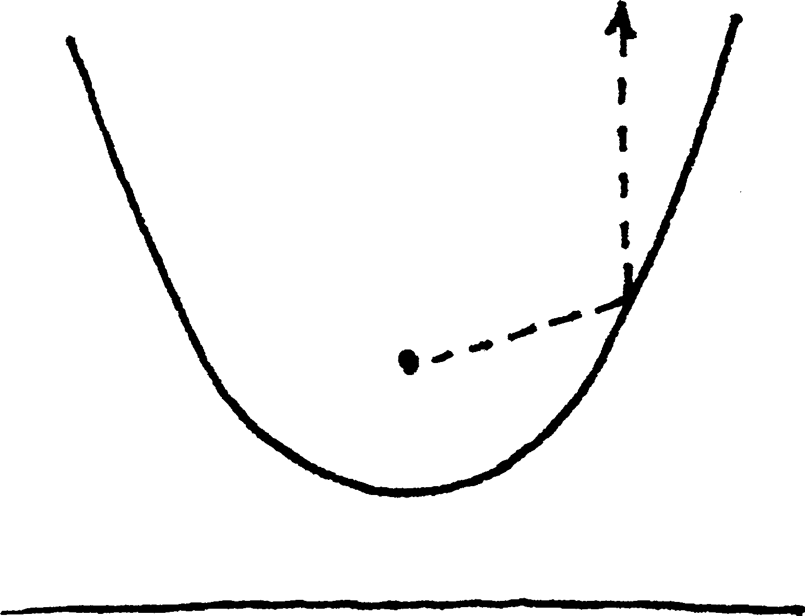
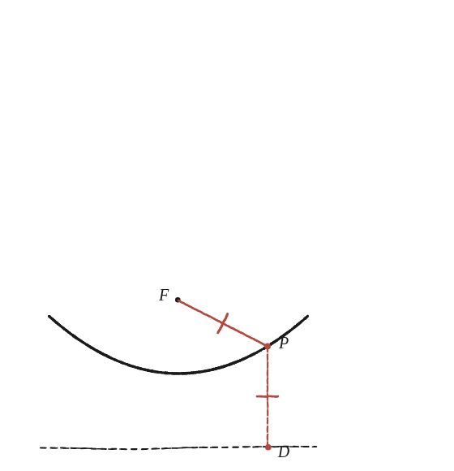
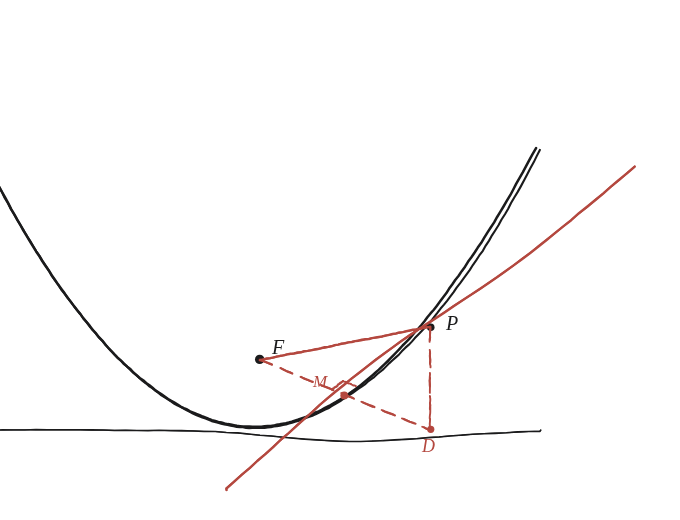

Pots demostrar directament aquesta propietat de la tangent, sense cap mena de "trucs de l'infinit"?

Què hem de produir
Una demostració que un raig vertical —paral·lel a l'eix— que arriba a la paràbola rebota exactament cap al focus, sense fer servir cap argument de "límit" ni de rectes que es toquen "a l'infinit". Només construcció i triangles.
La definició per punts
Un punt P de la paràbola és exactament tan lluny del focus F com de la directriu —és a dir, de D, el peu de la perpendicular des de P a la directriu. Si PF=PD, quin triangle isòsceles se'n dibuixa tot sol?

La construcció
El triangle isòsceles PFD, amb M el punt mitjà de FD, i la recta que passa per P i per M —que resulta ser, alhora, la mediatriu de FD i la tangent a la paràbola en P.

Tancar-ho
Es demostra que la bisectriu de l'angle en P del triangle isòsceles PFD —que també n'és la mediatriu del costat FD, per ser isòsceles— és precisament la tangent a la paràbola en P. Un cop establert això, el rebot surt sol: aquesta recta bisecta l'angle entre PF i PD. I PD és vertical, perquè D és el peu de la perpendicular de P a la directriu, que és horitzontal —és a dir, PD és exactament la direcció del raig que arriba. Un raig que arriba per PD i rebota en una recta que bisecta l'angle PD–PF se'n va, doncs, per PF: cap al focus. Compte: FD, en canvi, no és vertical, tret del cas del vèrtex —és PD la que ho és sempre, i és aquesta la que fa la feina.
La tangent a la paràbola en P és la mediatriu del segment FD (entre el focus i el peu a la directriu) —construïda amb un triangle isòsceles ordinari, sense cap argument de límit ni d'infinit.
Comprovació
Paràbola y=x²/8 (p=2, focus F=(0,2), directriu y=−2). Amb x=3: el punt de la corba és P=(3, 9/8), el seu peu a la directriu és D=(3, −2). PD = 9/8+2 = 25/8, i PF = √(3²+(9/8−2)²) = √(9+49/64) = 25/8 —confirmat que PFD és isòsceles. El punt mitjà de F=(0,2) i D=(3,−2) és (1,5, 0). La recta de P a aquest punt mitjà té pendent (9/8−0)/(3−1,5) = 3/4, exactament el pendent de la tangent en aquell punt.
Aquesta construcció —la mediatriu d'un segment entre el focus i el peu a la directriu— és el mètode clàssic, sense càlcul, amb què es demostrava aquesta propietat molt abans que existís la geometria analítica, i és exactament la propietat que fa servir qualsevol antena parabòlica: si totes les tangents reflecteixen cap al mateix punt F, tots els raigs paral·lels a l'eix s'hi concentren.